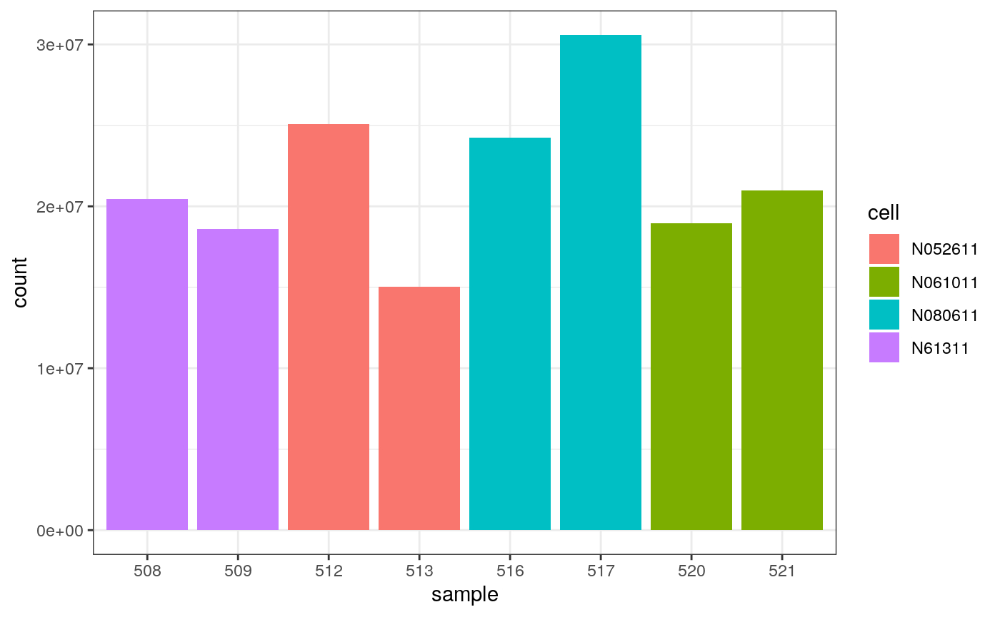
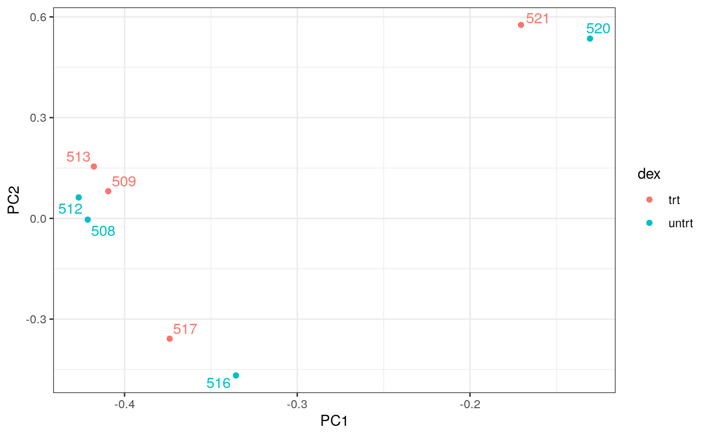
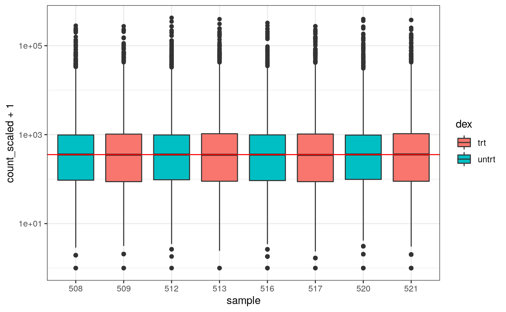
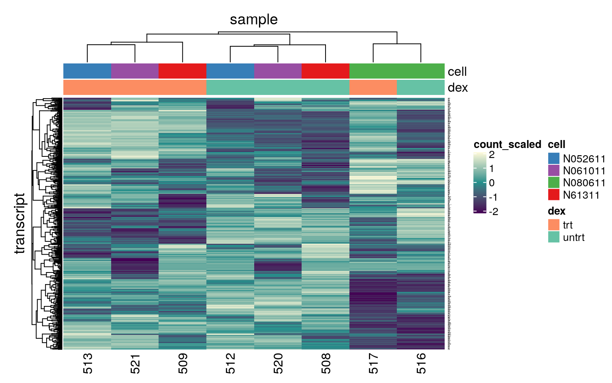
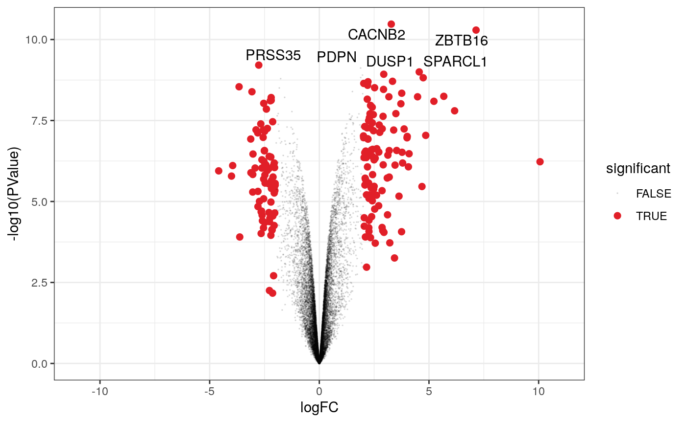
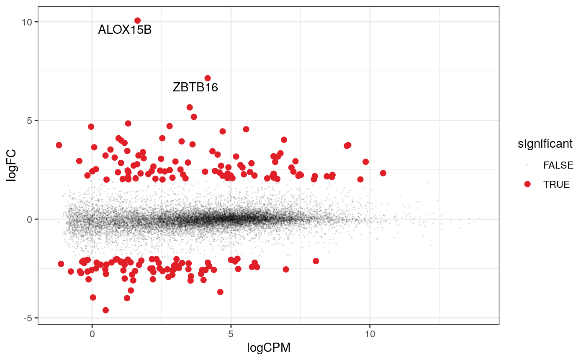
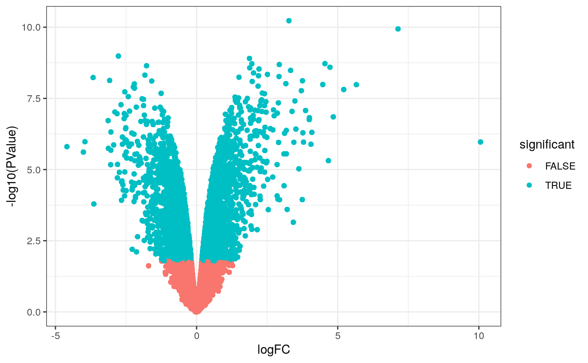
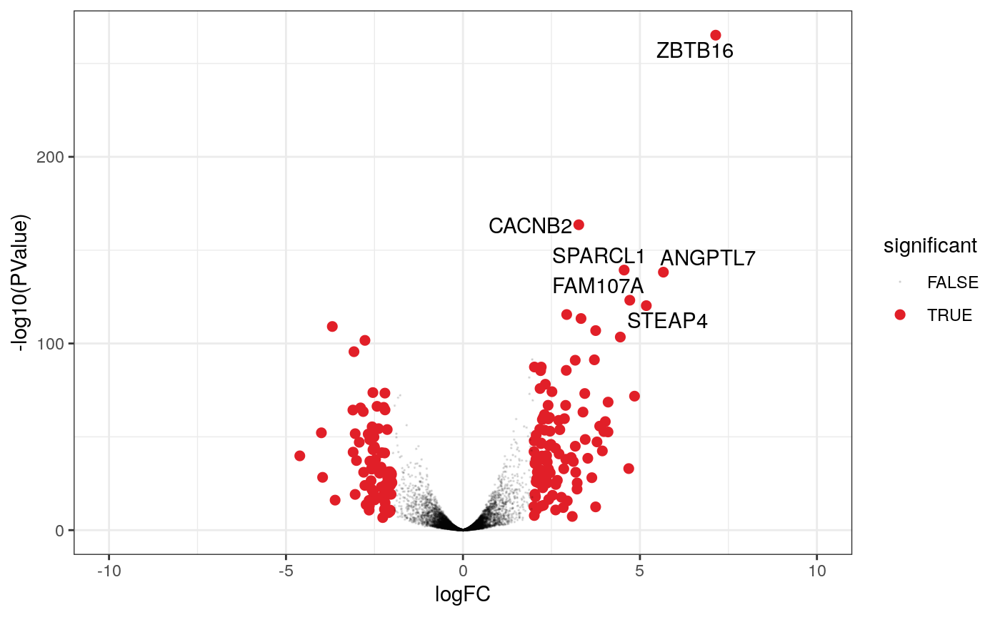
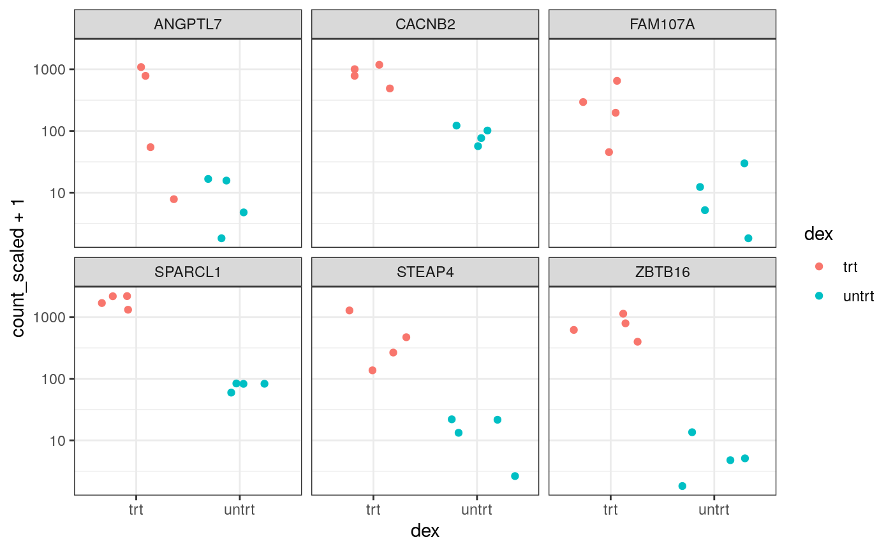

vignettes/tidytranscriptomics.Rmd
tidytranscriptomics.RmdA Tidy Transcriptomics introduction to RNA-Seq analyses
Authors: Dr. Maria Doyle1, Dr. Stefano Mangiola2
Workshop Description
This workshop will present how to perform analysis of RNA sequencing data following the tidy data paradigm. The tidy data paradigm provides a standard way to organise data values within a dataset, where each variable is a column, each observation is a row, and data is manipulated using an easy-to-understand vocabulary. Most importantly, the data structure remains consistent across manipulation and analysis functions.
This can be achieved for RNA sequencing data with the tidybulk, tidyHeatmap and tidyverse packages. The package tidybulk provides a tidy data structure and a modular framework for bulk transcriptional analyses. tidyHeatmap provides a tidy implementation of ComplexHeatmap. These packages are part of the tidytranscriptomics suite that introduces a tidy approach to RNA sequencing data.
The topics presented in this workshop will be
- Data exploration
- Data dimensionality reduction and clustering
- Differential gene expression analysis
- Data visualisation
Pre-requisites
- Basic knowledge of RStudio
- Familiarity with tidyverse syntax
Recommended Background Reading Introduction to R for Biologists
Workshop goals and objectives
In exploring and analysing RNA sequencing data, there are a number of key concepts, such as filtering, scaling, dimensionality reduction, hypothesis testing, clustering and visualisation, that need to be understood. These concepts can be intuitively explained to new users, however, (i) the use of a heterogeneous vocabulary and jargon by methodologies/algorithms/packages, (ii) the complexity of data wrangling, and (iii) the coding burden, impede effective learning of the statistics and biology underlying an informed RNA sequencing analysis.
The tidytranscriptomics approach to RNA sequencing data analysis abstracts out the coding-related complexity and provides tools that use an intuitive and jargon-free vocabulary, enabling focus on the statistical and biological challenges.
Learning goals
- To understand the key concepts and steps of bulk RNA sequencing data analysis
- To approach data representation and analysis though a tidy data paradigm, integrating tidyverse with tidybulk and tidyHeatmap.
Overview
- Setting up tables of counts and metadata
- Formatting the data
- Filtering lowly expressed genes
- Scaling of counts
- Quality control plots
- Differential expression analysis
- Visualisation (Heatmaps, MA plot, Volcano plot)
Introduction and data import
Measuring gene expression on a genome-wide scale has become common practice over the last two decades or so, with microarrays predominantly used pre-2008. With the advent of next generation sequencing technology in 2008, an increasing number of scientists use this technology to measure and understand changes in gene expression in often complex systems. As sequencing costs have decreased, using RNA-Seq to simultaneously measure the expression of tens of thousands of genes for multiple samples has never been easier. The cost of these experiments has now moved from generating the data to storing and analysing it.
There are many steps involved in analysing an RNA-Seq experiment. Analysing an RNAseq experiment begins with sequencing reads. These are aligned to a reference genome, then the number of reads mapped to each gene can be counted. This results in a table of counts, which is what we perform statistical analyses on in R. While mapping and counting are important and necessary tasks, today we will be starting from the count data and getting stuck into analysis.
First, let’s load all the packages we will need to analyse the data.
# load libraries library(utils) library(stats) library(tibble) library(dplyr) library(tidyr) library(readr) library(stringr) library(ggplot2) library(ggrepel) library(tidyHeatmap) library(tidybulk) library(airway)
Airway RNA-seq dataset
Here we will perform RNA-Seq analysis using the data from airway package. It has 8 samples, a sample treated with dex and an untreated control sample for 4 cell lines.
Setting up the tables
The airway RNA-Seq data is stored as a SummarizedExperiment object. We’ll extract the counts into a table and do the same for the metadata information. Tables are often the format of the data at the start of an RNA-seq analysis.
You can type the name of the object to view the first few lines and to see how many rows and columns it has.
counts #> # A tibble: 64,102 x 9 #> GeneID SRR1039508 SRR1039509 SRR1039512 SRR1039513 SRR1039516 SRR1039517 #> <chr> <int> <int> <int> <int> <int> <int> #> 1 ENSG0… 679 448 873 408 1138 1047 #> 2 ENSG0… 0 0 0 0 0 0 #> 3 ENSG0… 467 515 621 365 587 799 #> 4 ENSG0… 260 211 263 164 245 331 #> 5 ENSG0… 60 55 40 35 78 63 #> 6 ENSG0… 0 0 2 0 1 0 #> 7 ENSG0… 3251 3679 6177 4252 6721 11027 #> 8 ENSG0… 1433 1062 1733 881 1424 1439 #> 9 ENSG0… 519 380 595 493 820 714 #> 10 ENSG0… 394 236 464 175 658 584 #> # … with 64,092 more rows, and 2 more variables: SRR1039520 <int>, #> # SRR1039521 <int>
The counts object contains information about genes (one gene per row), the first column has the Ensembl gene id, and the remaining columns contain information about the number of reads aligning to the gene in each experimental sample.
Next we’ll extract the sample information, so we know what groups (treatment and cell line) the samples belong to.
sampleinfo <- colData(airway) %>% as_tibble(rownames = "sample") sampleinfo #> # A tibble: 8 x 10 #> sample SampleName cell dex albut Run avgLength Experiment Sample #> <chr> <fct> <fct> <fct> <fct> <fct> <int> <fct> <fct> #> 1 SRR10… GSM1275862 N613… untrt untrt SRR1… 126 SRX384345 SRS50… #> 2 SRR10… GSM1275863 N613… trt untrt SRR1… 126 SRX384346 SRS50… #> 3 SRR10… GSM1275866 N052… untrt untrt SRR1… 126 SRX384349 SRS50… #> 4 SRR10… GSM1275867 N052… trt untrt SRR1… 87 SRX384350 SRS50… #> 5 SRR10… GSM1275870 N080… untrt untrt SRR1… 120 SRX384353 SRS50… #> 6 SRR10… GSM1275871 N080… trt untrt SRR1… 126 SRX384354 SRS50… #> 7 SRR10… GSM1275874 N061… untrt untrt SRR1… 101 SRX384357 SRS50… #> 8 SRR10… GSM1275875 N061… trt untrt SRR1… 98 SRX384358 SRS50… #> # … with 1 more variable: BioSample <fct>
The dex column tells us whether the samples are treated or untreated and the cell column tells us what cell line they are from.
First we will convert the counts into long format (tidy format), similar to what we did in the Intro to R session.
# convert to tidy format counts_long <- pivot_longer(counts, cols = starts_with("SRR"), names_to = "sample", values_to = "count") # take a look counts_long #> # A tibble: 512,816 x 3 #> GeneID sample count #> <chr> <chr> <int> #> 1 ENSG00000000003 SRR1039508 679 #> 2 ENSG00000000003 SRR1039509 448 #> 3 ENSG00000000003 SRR1039512 873 #> 4 ENSG00000000003 SRR1039513 408 #> 5 ENSG00000000003 SRR1039516 1138 #> 6 ENSG00000000003 SRR1039517 1047 #> 7 ENSG00000000003 SRR1039520 770 #> 8 ENSG00000000003 SRR1039521 572 #> 9 ENSG00000000005 SRR1039508 0 #> 10 ENSG00000000005 SRR1039509 0 #> # … with 512,806 more rows
We can get the gene symbols for these Ensembl gene ids with tidybulk’s ensembl_to_symbol. This works for human and mouse.
counts_long <- ensembl_to_symbol(counts_long, GeneID) #> Joining, by = "GeneID" counts_long #> # A tibble: 512,816 x 5 #> GeneID sample count transcript ref_genome #> <chr> <chr> <int> <chr> <chr> #> 1 ENSG00000000003 SRR1039508 679 TSPAN6 hg38 #> 2 ENSG00000000003 SRR1039509 448 TSPAN6 hg38 #> 3 ENSG00000000003 SRR1039512 873 TSPAN6 hg38 #> 4 ENSG00000000003 SRR1039513 408 TSPAN6 hg38 #> 5 ENSG00000000003 SRR1039516 1138 TSPAN6 hg38 #> 6 ENSG00000000003 SRR1039517 1047 TSPAN6 hg38 #> 7 ENSG00000000003 SRR1039520 770 TSPAN6 hg38 #> 8 ENSG00000000003 SRR1039521 572 TSPAN6 hg38 #> 9 ENSG00000000005 SRR1039508 0 TNMD hg38 #> 10 ENSG00000000005 SRR1039509 0 TNMD hg38 #> # … with 512,806 more rows
We will next extract just the columns we need, sample, transcript, count. To do this we will use the tidyverse pipe %>%. This ‘pipes’ the output from the command on the left into the command on the right/below. Using the pipe is not essential but it reduces the amount of code we need to write when we have multiple steps (as we’ll see later). It also can make the steps clearer and easier to see. For more details on the pipe see here.
# using pipe counts_long_sel <- counts_long %>% select(sample, transcript, count) # take a look counts_long_sel #> # A tibble: 512,816 x 3 #> sample transcript count #> <chr> <chr> <int> #> 1 SRR1039508 TSPAN6 679 #> 2 SRR1039509 TSPAN6 448 #> 3 SRR1039512 TSPAN6 873 #> 4 SRR1039513 TSPAN6 408 #> 5 SRR1039516 TSPAN6 1138 #> 6 SRR1039517 TSPAN6 1047 #> 7 SRR1039520 TSPAN6 770 #> 8 SRR1039521 TSPAN6 572 #> 9 SRR1039508 TNMD 0 #> 10 SRR1039509 TNMD 0 #> # … with 512,806 more rows
Now we have our counts matrix in the long format we will join it to our sampleinfo so we have information on the samples, what groups they belong to. The join will use all columns with the same name to join. Here we have a column called “sample” in both tables so that will be used to join the two tables.
counts_annot <- left_join(counts_long_sel, sampleinfo) #> Joining, by = "sample" # take a look counts_annot #> # A tibble: 512,816 x 12 #> sample transcript count SampleName cell dex albut Run avgLength #> <chr> <chr> <int> <fct> <fct> <fct> <fct> <fct> <int> #> 1 SRR10… TSPAN6 679 GSM1275862 N613… untrt untrt SRR1… 126 #> 2 SRR10… TSPAN6 448 GSM1275863 N613… trt untrt SRR1… 126 #> 3 SRR10… TSPAN6 873 GSM1275866 N052… untrt untrt SRR1… 126 #> 4 SRR10… TSPAN6 408 GSM1275867 N052… trt untrt SRR1… 87 #> 5 SRR10… TSPAN6 1138 GSM1275870 N080… untrt untrt SRR1… 120 #> 6 SRR10… TSPAN6 1047 GSM1275871 N080… trt untrt SRR1… 126 #> 7 SRR10… TSPAN6 770 GSM1275874 N061… untrt untrt SRR1… 101 #> 8 SRR10… TSPAN6 572 GSM1275875 N061… trt untrt SRR1… 98 #> 9 SRR10… TNMD 0 GSM1275862 N613… untrt untrt SRR1… 126 #> 10 SRR10… TNMD 0 GSM1275863 N613… trt untrt SRR1… 126 #> # … with 512,806 more rows, and 3 more variables: Experiment <fct>, #> # Sample <fct>, BioSample <fct>
We can shorten the sample names. We can remove the SRR1039 prefix that’s present in all of them, as shorter names can fit better in some of the plots we will create. We can use mutate() together with str_replace() to remove the SRR1039 string from the sample column.
counts_annot_pretty <- counts_annot %>% mutate(sample=str_remove(sample, "SRR1039"))
All above operations can be linked, so no temporary variable have to be created.
counts_annot_pretty <- counts %>% pivot_longer(cols = starts_with("SRR"), names_to = "sample", values_to = "count") %>% ensembl_to_symbol(GeneID) %>% select(sample, transcript, count) %>% full_join(sampleinfo) %>% mutate(sample=str_remove(sample, "SRR1039")) #> Joining, by = "GeneID" #> Joining, by = "sample"
Now that we have our data in the format we want we will create a tidybulk object, that we can use to perform differential expression analysis with the tidybulk package. For this we need to specify our counts object and the names of the columns that contain our sample ids, our gene identifiers and our counts. Any other columns in the counts object e.g. our Ensembl gene id column will remain at the end.
#create a 'tt' object counts_tt <- tidybulk(counts_annot_pretty, sample, transcript, count) # take a look counts_tt #> # A tibble: 512,816 x 12 #> sample transcript count SampleName cell dex albut Run avgLength #> <chr> <chr> <int> <fct> <fct> <fct> <fct> <fct> <int> #> 1 508 TSPAN6 679 GSM1275862 N613… untrt untrt SRR1… 126 #> 2 509 TSPAN6 448 GSM1275863 N613… trt untrt SRR1… 126 #> 3 512 TSPAN6 873 GSM1275866 N052… untrt untrt SRR1… 126 #> 4 513 TSPAN6 408 GSM1275867 N052… trt untrt SRR1… 87 #> 5 516 TSPAN6 1138 GSM1275870 N080… untrt untrt SRR1… 120 #> 6 517 TSPAN6 1047 GSM1275871 N080… trt untrt SRR1… 126 #> 7 520 TSPAN6 770 GSM1275874 N061… untrt untrt SRR1… 101 #> 8 521 TSPAN6 572 GSM1275875 N061… trt untrt SRR1… 98 #> 9 508 TNMD 0 GSM1275862 N613… untrt untrt SRR1… 126 #> 10 509 TNMD 0 GSM1275863 N613… trt untrt SRR1… 126 #> # … with 512,806 more rows, and 3 more variables: Experiment <fct>, #> # Sample <fct>, BioSample <fct>
Some gene symbols are not unique, they map to more than one gene id. We need to remove this redundancy and we can do that with tidybulk function aggregate_duplicates(). By default it will aggregate duplicate gene symbols summing their counts.
# get rid of duplicated gene symbols and drop any NAs counts_aggr <- aggregate_duplicates(counts_tt) #> Warning in aggregate_duplicated_transcripts_bulk(.data, .sample = !!.sample, : #> tidybulk says: for aggregation fctors and logical columns were converted to #> character #> Converted to characters #> factorfactorfactorfactorfactorfactorfactorfactor counts_aggr <- drop_na(counts_aggr, transcript)
We can check how many counts we have for each sample by making a bar plot. This helps us see whether there are any major discrepancies between the samples more easily. We use weight= to sum up the counts for each sample.
# make barplot of counts ggplot(counts_aggr, aes(x=sample, weight=count, fill=dex)) + geom_bar()+ theme_bw()
 We can also easily view by cell line (or any other variable that’s a column in our dataset) simply by changing fill=.
# make barplot of counts ggplot(counts_aggr, aes(x=sample, weight=count, fill=cell)) + geom_bar()+ theme_bw()

The bar plots show us there are 15-30 million counts per sample.
Filtering lowly expressed genes
Genes with very low counts across all libraries provide little evidence for differential expression and they interfere with some of the statistical approximations that are used later in the pipeline. They also add to the multiple testing burden when estimating false discovery rates, reducing power to detect differentially expressed genes. These genes should be filtered out prior to further analysis.
tidybulk can automatically filter out lowly expressed genes. It uses the edgeR filterByExpr function described here. This will keep genes with ~10 counts in a minimum number of samples, the number of the samples in the smallest group. In this dataset the smallest group size is 2 samples. tidybulk performs this filtering in the functions we will use scale_abundance() and test_differential_abundance() and we can take a look at it with keep_abundant().
# Filtering out lowly abundant genes counts_filt <- counts_aggr %>% keep_abundant(factor_of_interest = dex) # take a look counts_filt #> # A tibble: 116,600 x 13 #> sample transcript count SampleName cell dex albut Run avgLength #> <chr> <chr> <int> <chr> <chr> <chr> <chr> <chr> <dbl> #> 1 508 TSPAN6 679 GSM1275862 N613… untrt untrt SRR1… 126 #> 2 509 TSPAN6 448 GSM1275863 N613… trt untrt SRR1… 126 #> 3 512 TSPAN6 873 GSM1275866 N052… untrt untrt SRR1… 126 #> 4 513 TSPAN6 408 GSM1275867 N052… trt untrt SRR1… 87 #> 5 516 TSPAN6 1138 GSM1275870 N080… untrt untrt SRR1… 120 #> 6 517 TSPAN6 1047 GSM1275871 N080… trt untrt SRR1… 126 #> 7 520 TSPAN6 770 GSM1275874 N061… untrt untrt SRR1… 101 #> 8 521 TSPAN6 572 GSM1275875 N061… trt untrt SRR1… 98 #> 9 508 DPM1 467 GSM1275862 N613… untrt untrt SRR1… 126 #> 10 509 DPM1 515 GSM1275863 N613… trt untrt SRR1… 126 #> # … with 116,590 more rows, and 4 more variables: Experiment <chr>, #> # Sample <chr>, BioSample <chr>, `merged transcripts` <dbl>
We can create density plots to view the distributions of the counts for the samples. This is also a quality check to see if the samples look similar and that none look majorly different. Note we need to log the counts which we can do by using scale_x_log10() We need to add a small offset (1) to the counts to avoid taking log of zero.
# density plot after filtering counts_filt %>% ggplot(aes(x=count + 1, group=sample, color=dex)) + geom_density() + scale_x_log10()+ theme_bw()
 These samples all look pretty similar, none are majorly different.
These samples all look pretty similar, none are majorly different.
We can count how many genes there are after filtering.
counts_filt %>% select(transcript) %>% n_distinct() #> [1] 14575
Normalisation for sequencing depth and composition
TMM normalisation is performed to eliminate composition biases between libraries [@robinson2010tmm]. This generates a set of normalisation factors, where the product of these factors and the library sizes defines the effective library size. TMM normalisation (and most scaling normalisation methods) scale relative to one sample. In the tidybulk package the function scale_abundance() generates scaled counts, it will also perform the filtering.
# Scaling counts for library size and composition bias counts_scaled <- counts_filt %>% scale_abundance(factor_of_interest = dex) # take a look counts_scaled #> # A tibble: 116,600 x 17 #> sample transcript count SampleName cell dex albut Run avgLength #> <chr> <chr> <int> <chr> <chr> <chr> <chr> <chr> <dbl> #> 1 508 A1BG-AS1 38 GSM1275862 N613… untrt untrt SRR1… 126 #> 2 508 A2M 20085 GSM1275862 N613… untrt untrt SRR1… 126 #> 3 508 A2M-AS1 49 GSM1275862 N613… untrt untrt SRR1… 126 #> 4 508 A4GALT 834 GSM1275862 N613… untrt untrt SRR1… 126 #> 5 508 AAAS 780 GSM1275862 N613… untrt untrt SRR1… 126 #> 6 508 AACS 399 GSM1275862 N613… untrt untrt SRR1… 126 #> 7 508 AADAT 171 GSM1275862 N613… untrt untrt SRR1… 126 #> 8 508 AAGAB 680 GSM1275862 N613… untrt untrt SRR1… 126 #> 9 508 AAK1 287 GSM1275862 N613… untrt untrt SRR1… 126 #> 10 508 AAMDC 89 GSM1275862 N613… untrt untrt SRR1… 126 #> # … with 116,590 more rows, and 8 more variables: Experiment <chr>, #> # Sample <chr>, BioSample <chr>, `merged transcripts` <dbl>, #> # count_scaled <dbl>, TMM <dbl>, multiplier <dbl>, lowly_abundant <lgl>
After we run scale_abundance() we should see some columns have been added at the end. We have a column called lowly_abundant that indicates whether the gene has been filtered due to being lowly expressed. FALSE means the gene wasn’t filtered, TRUE means it was. The count_scaled column contains the scaled counts.
We can also create box plots to check the distributions of the counts in the samples. We can add a line through the median with to help us see how similar (or not) the distributions are.
# box plot after scaling counts_scaled %>% filter(lowly_abundant == FALSE) %>% ggplot(aes(x=sample, y=count_scaled + 1, fill=dex)) + geom_boxplot() + geom_hline(aes(yintercept = median(count_scaled + 1)), colour = 'red', show.legend = FALSE) + scale_y_log10()+ theme_bw()
 These samples all look pretty similar, none are majorly different.
Quality control
Multidimensional scaling plots
By far, one of the most important plots we make when we analyse RNA-Seq data are MDS plots. An MDS plot is a visualisation of a principal components analysis, which determines the greatest sources of variation in the data. A principal components analysis is an example of an unsupervised analysis, where we don’t need to specify the groups. If your experiment is well controlled and has worked well, what we hope to see is that the greatest sources of variation in the data are the treatments/groups we are interested in. It is also an incredibly useful tool for quality control and checking for outliers. We can use the reduce_dimensions() function to calculate the dimensions.
# get MDS dimensions counts_scal_MDS <- counts_scaled %>% reduce_dimensions(method="MDS", .dims = 2) #> tidybulk says: to access the raw results do `attr(..., "tt_internals")$MDS` # take a look counts_scal_MDS #> # A tibble: 116,600 x 19 #> sample transcript count SampleName cell dex albut Run avgLength #> <chr> <chr> <int> <chr> <chr> <chr> <chr> <chr> <dbl> #> 1 508 A1BG-AS1 38 GSM1275862 N613… untrt untrt SRR1… 126 #> 2 508 A2M 20085 GSM1275862 N613… untrt untrt SRR1… 126 #> 3 508 A2M-AS1 49 GSM1275862 N613… untrt untrt SRR1… 126 #> 4 508 A4GALT 834 GSM1275862 N613… untrt untrt SRR1… 126 #> 5 508 AAAS 780 GSM1275862 N613… untrt untrt SRR1… 126 #> 6 508 AACS 399 GSM1275862 N613… untrt untrt SRR1… 126 #> 7 508 AADAT 171 GSM1275862 N613… untrt untrt SRR1… 126 #> 8 508 AAGAB 680 GSM1275862 N613… untrt untrt SRR1… 126 #> 9 508 AAK1 287 GSM1275862 N613… untrt untrt SRR1… 126 #> 10 508 AAMDC 89 GSM1275862 N613… untrt untrt SRR1… 126 #> # … with 116,590 more rows, and 10 more variables: Experiment <chr>, #> # Sample <chr>, BioSample <chr>, `merged transcripts` <dbl>, #> # count_scaled <dbl>, TMM <dbl>, multiplier <dbl>, lowly_abundant <lgl>, #> # Dim1 <dbl>, Dim2 <dbl>
Then we can select just the dimensions for the samples.
# get the dimensions with all metadata MDSdims <- counts_scal_MDS %>% pivot_sample() # take a look MDSdims #> # A tibble: 8 x 15 #> sample SampleName cell dex albut Run avgLength Experiment Sample #> <chr> <chr> <chr> <chr> <chr> <chr> <dbl> <chr> <chr> #> 1 508 GSM1275862 N613… untrt untrt SRR1… 126 SRX384345 SRS50… #> 2 509 GSM1275863 N613… trt untrt SRR1… 126 SRX384346 SRS50… #> 3 512 GSM1275866 N052… untrt untrt SRR1… 126 SRX384349 SRS50… #> 4 513 GSM1275867 N052… trt untrt SRR1… 87 SRX384350 SRS50… #> 5 516 GSM1275870 N080… untrt untrt SRR1… 120 SRX384353 SRS50… #> 6 517 GSM1275871 N080… trt untrt SRR1… 126 SRX384354 SRS50… #> 7 520 GSM1275874 N061… untrt untrt SRR1… 101 SRX384357 SRS50… #> 8 521 GSM1275875 N061… trt untrt SRR1… 98 SRX384358 SRS50… #> # … with 6 more variables: BioSample <chr>, TMM <dbl>, multiplier <dbl>, #> # lowly_abundant <lgl>, Dim1 <dbl>, Dim2 <dbl>
Next we can plot the MDS dimensions as a scatterplot. We’ll colour by the conditions to see if the replicates group together.
# MDS plot MDSdims %>% ggplot(aes(x=Dim1, y=Dim2, colour=dex)) + geom_point() + theme_bw()

Hierarchical clustering with heatmaps
An alternative to MDS for examining relationships between samples is using hierarchical clustering. Heatmaps are a nice visualisation to examine hierarchical clustering of your samples. tidybulk has a simple function we can use to extract the 500 most variable genes which we can then plot with tidyHeatmap.
counts_scal_MDS %>% # extract 500 most variable genes keep_variable(.sample = sample, .transcript = transcript, .abundance = count_scaled, top = 500) %>% # create heatmap heatmap( .column = sample, .row = transcript, .value = count_scaled, annotation = c(dex, cell), transform = log1p ) #> Getting the 500 most variable genes

Differential expression
Now that we are happy that the data looks good, we can continue to testing for differentially expressed genes. We will use the test_differential_abundance() from tidybulk which uses edgeR to perform the differential expression analysis. We give test_differential_abundance() our tidybulk counts object and a formula, specifying the column that contains our groups to be compared. If all our samples were from the same cell line we could use the formula 0 + dex, however, each treated and untreated sample is from a different celline so we add the cell line as an additional factor 0 + dex + cell. We also provide the names of the groups we want to compare/contrast to .contrasts (e.g. .contrasts = c(“dextreat - dexuntreat”)). test_differential_abundance() will perform the filtering of lowly expressed genes as described before. The results will be joined to our counts for every sample. If we just want a table of differentially expressed genes we can use pivot_transcript.
counts_de <- counts_scal_MDS %>% test_differential_abundance( .formula = ~ 0 + dex + cell, .contrasts = c("dextrt - dexuntrt")) #> Warning in get_differential_transcript_abundance_bulk(.data, .formula, .sample #> = !!.sample, : tidybulk says: You have less than two replicated for each #> factorial condition #> tidybulk says: The design column names are "dextrt, dexuntrt, cellN061011, cellN080611, cellN61311" #> Joining, by = "transcript" #> tidybulk says: to access the raw results (glmFit) do `attr(..., "tt_internals")$edgeR` #> Joining, by = c("transcript", "lowly_abundant") # take a look counts_de %>% pivot_transcript() #> # A tibble: 14,575 x 10 #> transcript albut `merged transcr… lowly_abundant `logFC_dextrt -… #> <chr> <chr> <dbl> <lgl> <dbl> #> 1 A1BG-AS1 untrt 1 FALSE 0.503 #> 2 A2M untrt 1 FALSE 0.523 #> 3 A2M-AS1 untrt 1 FALSE -0.344 #> 4 A4GALT untrt 1 FALSE 0.511 #> 5 AAAS untrt 1 FALSE -0.0338 #> 6 AACS untrt 1 FALSE -0.199 #> 7 AADAT untrt 1 FALSE -0.648 #> 8 AAGAB untrt 1 FALSE -0.173 #> 9 AAK1 untrt 1 FALSE -0.200 #> 10 AAMDC untrt 1 FALSE 0.438 #> # … with 14,565 more rows, and 5 more variables: `logCPM_dextrt - #> # dexuntrt` <dbl>, `LR_dextrt - dexuntrt` <dbl>, `PValue_dextrt - #> # dexuntrt` <dbl>, `FDR_dextrt - dexuntrt` <dbl>, `significant_dextrt - #> # dexuntrt` <lgl>
Now we have columns with our logFC and FDR P values. There is also a column called significant that indicates if the gene has FDR < 0.05.
Table of differentially expressed genes
We can write out our differentialy expressed genes to a file that can be loaded into e.g. Excel. write_tsv() will create a tab-separated file.
# save results counts_de %>% pivot_transcript() %>% write_tsv( "de_results.tsv")
We only have one contrast here so we can remove the suffix _conditionbpreg - conditionblact from the column headers, to make the names shorter to use in the rest of the commands here.
counts_de_pretty <- counts_de %>% rename_at(vars(contains("dex")), ~str_replace(., "_dextrt - dexuntrt", ""))
Counting differentially expressed genes
We can count how many differentially expressed genes there are using the significant column.
counts_de_pretty %>% filter(significant == TRUE) %>% select(transcript) %>% n_distinct() #> [1] 5247
Extracting top differentially expressed genes
We can get the top genes by P value with
counts_de_pretty %>% pivot_transcript() %>% filter(significant == TRUE) %>% arrange(PValue) %>% head(6) #> # A tibble: 6 x 10 #> transcript albut `merged transcr… lowly_abundant logFC logCPM LR PValue #> <chr> <chr> <dbl> <lgl> <dbl> <dbl> <dbl> <dbl> #> 1 ZBTB16 untrt 1 FALSE 7.14 4.16 1214. 6.75e-266 #> 2 CACNB2 untrt 1 FALSE 3.27 4.52 746. 2.52e-164 #> 3 SPARCL1 untrt 1 FALSE 4.55 5.54 635. 4.66e-140 #> 4 ANGPTL7 untrt 1 FALSE 5.66 3.51 630. 6.23e-139 #> 5 FAM107A untrt 1 FALSE 4.71 2.79 560. 6.61e-124 #> 6 STEAP4 untrt 1 FALSE 5.18 3.66 547. 5.36e-121 #> # … with 2 more variables: FDR <dbl>, significant <lgl>
We can extract the symbols for these top genes with
topgenes <- counts_de_pretty %>% pivot_transcript() %>% filter(significant == TRUE) %>% arrange(PValue) %>% head(6) %>% pull(transcript)
Plots after testing for DE
Let’s make a few plots to make sure everything looks good and that we haven’t made a mistake in the analysis. Genome-wide plots that are useful for checking are MA plots and volcano plots. We can also use stripcharts and heatmaps to visualise groups of genes.
MA plots
MA plots enable us to visualise amount of expression (logCPM) versus logFC. Highly expressed genes are towards the right of the plot. We can also colour significant genes (e.g. genes with FDR < 0.05)
# maplot, minimal counts_de_pretty %>% filter(lowly_abundant == FALSE) %>% ggplot(aes(x=logCPM, y=-logFC, colour=significant)) + geom_point()+ theme_bw()

A more informative plot, integrating some of the packages in tidyverse
counts_de_pretty %>% pivot_transcript() %>% # Subset data mutate(significant = FDR<0.05 & abs(logFC) >=2) %>% mutate(transcript = ifelse(abs(logFC) >=7, as.character(transcript), NA)) %>% # Plot ggplot(aes(x = logCPM, y = logFC, label=transcript)) + geom_point(aes(color = significant, size = significant, alpha=significant)) + geom_text_repel() + scale_color_manual(values=c("black", "#e11f28")) + scale_size_discrete(range = c(0, 2)) + theme_bw() #> Warning: Using size for a discrete variable is not advised. #> Warning: Using alpha for a discrete variable is not advised. #> Warning: Removed 14573 rows containing missing values (geom_text_repel).

Volcano plots
Volcano plots enable us to visualise significance of expression (logCPM) versus logFC. Highly significant genes are towards the top of the plot. We can also colour significant genes (e.g. genes with FDR < 0.05)
# volcanoplot, minimal counts_de_pretty %>% filter(lowly_abundant == FALSE) %>% ggplot(aes(x=logFC, y=-log10(PValue), colour=significant)) + geom_point() + theme_bw()
 To see how to make more complicated volcano plots, including how to label genes in the plot, see the volcano plot tutorial here. More complicated MA plots could also be made in a similar way.
Stripcharts
In addition to the genome-wide plots already discussed, it is recommended to have a look at the expression levels of the individual samples for the genes of interest, before following up on the DE genes with further lab work. We can use stripcharts and heatmaps to do this. These will help show if expression is consistent amongst replicates in the groups.
With stripcharts we can see if replicates tend to group together and how the expression compares to the other groups.
counts_de_pretty %>% # extract counts for top DE genes filter(transcript %in% topgenes) %>% # make stripchart ggplot(aes(x = dex, y = count_scaled + 1, colour = dex)) + geom_jitter() + facet_wrap(~transcript) + scale_y_log10()+ theme_bw()

Heatmaps
We can create heatmaps for the most differentially expressed genes. For example we could select the genes with FDR < 0.05 and a logFC change of 4 and make a heatmap of those.
Then we can create the heatmap selecting genes by applying filters for e.g. FDR and logFC.
counts_de_pretty %>% filter(FDR < 0.05 & abs(logFC) > 4) %>% heatmap( .column = sample, .row = transcript, .value = count_scaled, annotation = c(dex, cell), transform = log1p )

Reproducibility
Record package and version information with sessionInfo()
sessionInfo() #> R version 4.0.0 (2020-04-24) #> Platform: x86_64-pc-linux-gnu (64-bit) #> Running under: Ubuntu 18.04.4 LTS #> #> Matrix products: default #> BLAS/LAPACK: /usr/lib/x86_64-linux-gnu/libopenblasp-r0.2.20.so #> #> locale: #> [1] LC_CTYPE=en_US.UTF-8 LC_NUMERIC=C #> [3] LC_TIME=en_US.UTF-8 LC_COLLATE=en_US.UTF-8 #> [5] LC_MONETARY=en_US.UTF-8 LC_MESSAGES=C #> [7] LC_PAPER=en_US.UTF-8 LC_NAME=C #> [9] LC_ADDRESS=C LC_TELEPHONE=C #> [11] LC_MEASUREMENT=en_US.UTF-8 LC_IDENTIFICATION=C #> #> attached base packages: #> [1] parallel stats4 grid stats graphics grDevices utils #> [8] datasets methods base #> #> other attached packages: #> [1] airway_1.9.0 SummarizedExperiment_1.19.4 #> [3] DelayedArray_0.15.1 matrixStats_0.56.0 #> [5] Biobase_2.49.0 GenomicRanges_1.41.1 #> [7] GenomeInfoDb_1.25.0 IRanges_2.23.6 #> [9] S4Vectors_0.27.9 BiocGenerics_0.35.2 #> [11] tidybulk_1.1.0 tidyHeatmap_0.99.18 #> [13] ComplexHeatmap_2.5.3 ggrepel_0.8.2 #> [15] ggplot2_3.3.0 stringr_1.4.0 #> [17] readr_1.3.1 tidyr_1.1.0 #> [19] dplyr_0.8.5 tibble_3.0.1 #> #> loaded via a namespace (and not attached): #> [1] viridis_0.5.1 edgeR_3.31.0 viridisLite_0.3.0 #> [4] assertthat_0.2.1 GenomeInfoDbData_1.2.3 yaml_2.2.1 #> [7] pillar_1.4.4 backports_1.1.7 lattice_0.20-41 #> [10] limma_3.45.0 glue_1.4.1 digest_0.6.25 #> [13] RColorBrewer_1.1-2 XVector_0.29.1 colorspace_1.4-1 #> [16] htmltools_0.4.0 preprocessCore_1.51.0 Matrix_1.2-18 #> [19] pkgconfig_2.0.3 GetoptLong_0.1.8 zlibbioc_1.35.0 #> [22] purrr_0.3.4 scales_1.1.1 farver_2.0.3 #> [25] ellipsis_0.3.1 withr_2.2.0 cli_2.0.2 #> [28] magrittr_1.5 crayon_1.3.4 memoise_1.1.0 #> [31] evaluate_0.14 fs_1.4.1 fansi_0.4.1 #> [34] MASS_7.3-51.5 tools_4.0.0 hms_0.5.3 #> [37] GlobalOptions_0.1.1 lifecycle_0.2.0 locfit_1.5-9.4 #> [40] munsell_0.5.0 cluster_2.1.0 compiler_4.0.0 #> [43] pkgdown_1.5.1 rlang_0.4.6 RCurl_1.98-1.2 #> [46] rjson_0.2.20 circlize_0.4.9 labeling_0.3 #> [49] bitops_1.0-6 rmarkdown_2.1 gtable_0.3.0 #> [52] R6_2.4.1 gridExtra_2.3 knitr_1.28 #> [55] utf8_1.1.4 clue_0.3-57 rprojroot_1.3-2 #> [58] shape_1.4.4 desc_1.2.0 stringi_1.4.6 #> [61] Rcpp_1.0.4.6 vctrs_0.3.0 png_0.1-7 #> [64] tidyselect_1.1.0 xfun_0.14
Key Points
- RNA-Seq data can be analysed in a ‘tidy’ way using the packages tidyverse, tidybulk and tidyHeatmap
- Key steps in an RNA-Seq analysis are filtering lowly expressed genes, normalisation for sequencing depth and composition, and testing for differential expression
- MDS plots are very important for examining the quality of the data
- Other useful plots for assessing RNA-Seq data are bar plots, density plots, box plots, MA plots, volcano plots, stripcharts and heatmaps. These can all be made in a ‘tidy’ way.